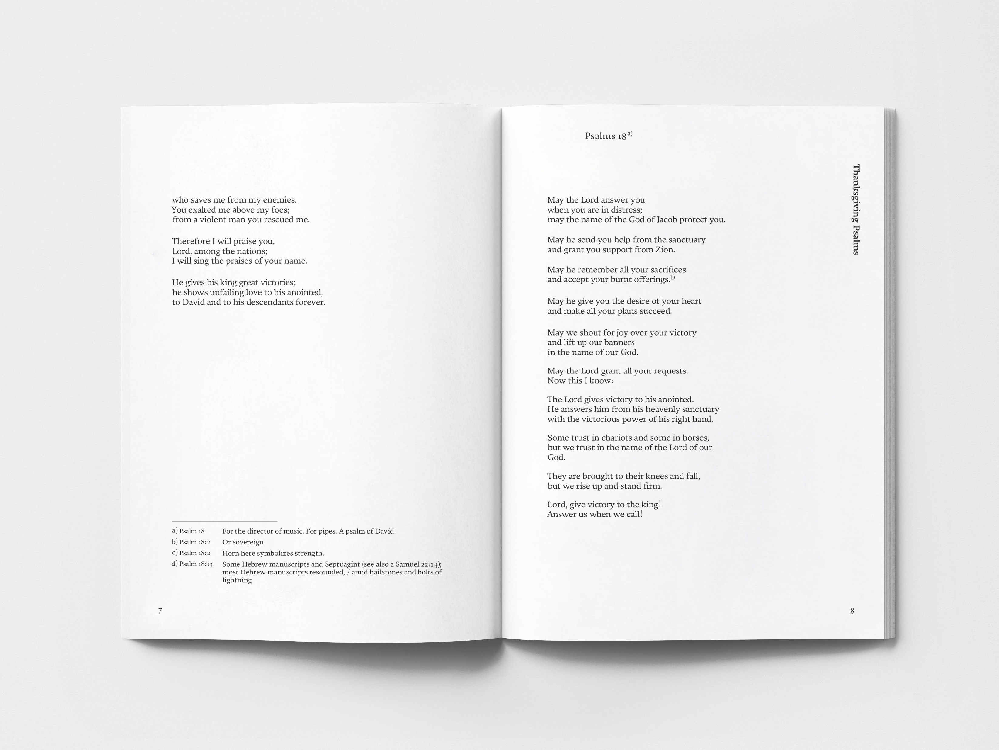

The Complete Works of Psalms
This work was carried out to design the psalms as a full collection of literature, considering that the psalms have fewer lines than other gospels and are often used in hymns. Rather than following the composition of the existing Psalms, which randomly placed a large volume of 151 pieces, it was divided into five categories, referred to the classification of psalms organized by theologian Gungel; ‘Hymns ’, ‘Lament&Complaint ’, ‘Royal’, ‘Thanksgiving ’, ‘Wisdom ’. This is a redesign project conducted in Typography3 class in 2019, co-worked with three members. I was in charge of English typeface research and inside design
시편 전집 디자인
성경의 시편이 다른 복음서에 비해 글줄의 양이 적고, 글의 특성상 찬송가와 같은 노래 가사에 많이 쓰인다는 점에서 착안하여 시편을 문학 전집으로 디자인하는 작업을 진행했다. 151편의 방대한 양을 랜덤하게 배치한 기존 시편의 구성을 따르기보다는, 신학자 궁켈이 정리한 분류를 참고하여 크게 ‘Hymns (찬양)’, ‘Lament & Complaint (애도, 불평)’, ‘Royal (왕과 관련된)’, ‘Thanksgiving (추수감사절)’, ‘Wisdom (지혜)’의 다섯 종류로 분권하였다. 성경과 문학작품의 클래식한 느낌을 살리기 위해 그래픽을 간소화하였고, 그 대신 장의 주제에 어울리는 서체를 사용함으로써 각 권의 분위기를 차별화시키고자 했다. 이 작업은 2019년 2학기 타이포그래피3 과목에서 진행한 리디자인 프로젝트로, 네 명의 팀원이 공동으로 제작했다. 팀 내에서는 영문 서체 리서치와 본문 디자인을 담당하였다.
The First Chapter of Psalms; Hymns
시편 전집 제1권 '찬송'
The Second Chapter of Psalms; Lament Complaint
시편 전집 제2권 '애도와 불평'


The Third Chapter of Psalms; Royal
시편 전집 제3권 '왕을 향한 친가'

The Fourth Chapter of Psalms; Thanksgiving
시편 전집 제4권 '추수기념일'


The Fifth Chapter of Psalms; Wisdom
시편 전집 제5권 '지혜'